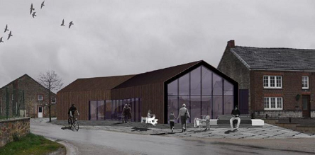

Un projet de maison de village avorté.
Toute vérité n'est pas bonne à dire dit le dicton, mais nous pensons être en droit de vous décrire celle que le Comité des fêtes s'est forgée au fil des informations dont il a pu prendre connaissance.
Citation de Jean Jaurès.
Petit historique :
- Dans un courrier d'avril 2014, un habitant écrit : "La salle existe depuis presque 100 ans".
- Cette salle a accueilli de nombreuses activités jusqu'en 2006.
- En 2006, elle a été déclarée insalubre et un dossier a été introduit afin de la démolir.
- En juillet 2006, un comité des fêtes s'est mis en place.
- En 2008 durant la kermesse de septembre, une pollution au mazout s'est
produite. La pluie abondante durant ce week-end là s'est iniltrée dans la cuve et a fait ressortir le mazout encore présent dans la cuve.
Les pompiers sont intervenus pour épandre de l'éco-perle. Le département des pollutions du Service
Public de Wallonie a dressé un constat.
- En 2010, un membre du Comité des fêtes a intégré la Commission Locale de Développement Rural afin de faire remonter le besoin
du Comité des fêtes en termes d'infrastructure. Le projet d'une nouvelle maison de village venait de voir le jour.
- Le 03 décembre 2010, la salle des jeunes de Haid vient d'être démolie, sans publicité, dans une indifférence apparente.
- Fin 2011, à l'unanimité, le conseil communal approuve le Programme Communal de Développement Rural et demande la mise en place
de la convention avec le SPW. Le projet n°1 consiste en la construction d'une maison de village à Haid. Cette convention portera le
numéro de visa 12/50956. Tout semble être sur de bons rails.
- En 2012, un changement de majorité s'opère suite aux élections. La liste UNION est au pouvoir.
La fiche projet suit son cours.
- En 2014, une seule ombre au tableau. Le voisin direct au projet de maison de village s'oppose au projet et refuse le rachat de la
mitoyenneté du mur de sa maison sur lequel la nouvelle maison de village serait venue en contact. Et puis tout s'emballe.
- Le 16 avril, le Collège met fin au projet
de Maison de Village à Haid. De manière unilatérale, le Collège communal décide l'abandon du projet.
Dans une interview,
le Collège justifie sa décision. Des arguments qui ne tiennent pas la route. A entendre Mr Botin, c'est à la réunion de Haversin que
cela s'est décidé. Visiblement le projet du Comité des fêtes de Haid n'a pas été défendu par les personnes présentes. Aucun membre du
comité n'a pu se rendre à cette réunion. Il est clair que la construction d'une maison de village à Haid a entraîné une forte inquiétude du
côté des nouveaux gestionaires de la salle La Traverse de Haversin. Est-ce cette crainte exacerbée ou simplement de la jalousie qui a joué
en défaveur de notre projet ?
- Le 16 avril en fin de journée,
le Comité des fêtes lance une pétition.
- Lors du Conseil communal d'avril, le Collège confirme sa décision, malgré les résultats presque unanime de la pétition en faveur
du maintien du projet. "Oui, nous confirmons notre décision, il n'y aura pas de salle à Haid. Nous aurions voulu composer avec tout
le monde, mais voilà, nos arguments n'ont pas l'air d'avoir convaincu." dira Mme Desille dans un article de L'Avenir du 30 avril. Le Collège fait avaliser sa décision par la nouvelle
CLDR 2012 dont la composition a changé et le droit de vote revenant aux membres effectifs seulement (ce qui n'a jamais été le cas dans
la CLDR précédente). Les arguments en faveur de l'abandon du projet sont nombreux et variés. Dans ce même article de L'Avenir du 30 avril,
il est question des difficultés environnementales et urbanistiques, révélées par Mr Gérard. Elles ne sont toutefois pas insurmontables
selon lui.
- Cependant, les résultats de la pétition poussera le Collège à proposer en mars 2015
une alternative au projet initial. La désacralisation de l'église de Haid et la réalisation de la maison de village en son sein.
Cela crée un émoi terrible dans le village.
- Face à ce projet, le Comité des fêtes réagit et exécute
une demande d'avis au sein de la population. Cette dernière est opposée au projet proposé.
- La fin de la législature sera houleuse pour la majorité relative sur ce dossier, cependant une ligne est inscrite au budget communal
2019 afin de permettre une nouvelle étude du projet. La convention d'avec le SPW cours toujours, l'espoir n'est donc pas perdu.
- Fin 2018, les élections mettent en place une nouvelle équipe. La liste ICI. Une liste citoyenne nous dit-on, à l'écoute des citoyens
et favorisant la participation citoyenne. L'engagement politique de personnes d'Haversin sur la liste ICI et se présentant à l'électeur
en faveur des villages ne changera rien à la donne. Pire encore, nous sommes proche sur ce cas précis d'un conflit d'intérêt.
- Début 2019, un membre du Comité des fêtes a posé sa candidature de participation à la nouvelle CLDR, au nom du Comité des fêtes de
Haid, pour poursuivre le projet de maison de village.
- En ce 09 fevrier 2019, le Comité des fêtes demande au nouveau Collège sa position sur le projet de maison de village de Haid et plus
particulièrement sur la dernière proposition qu'il a faite. La réponse tarde
à venir. Ce n'est que le 28 mars qu'elle nous parvient. Il est écrit : "Enfin, en ce qui concerne la création d'un lieu de rencontre
à Haid, le projet a dû malheureusement être abandonné."
Le Collège a donc attendu la fin du délai de recours à l'encontre de la décision du Ministre pour nous en informer.
Pour tout justificatif, nous est jointe la lettre du SPW mentionnant le désengagement
de celui-ci dans cette fiche projet. Notre oeil est cependant attiré par la mention de deux courriers électroniques qui ne sont pas
joins à la lettre du SPW dans notre échange avec le Collège.
Le Comité des fêtes réclame donc au Collège ces deux annexes. Il nous est spécifié en réponse ceci : "Les courriels
du 3 et 9 janvier 2019 constituant les annexes au courrier du SPW sont un échange de mails en interne. Dès lors, je ne dispose pas
de ces courriels."
- Le 01 avril 2019 a été jour de Conseil communal. Deux points à l'ordre du jour étaient en lien avec notre projet. Le premier
consistait à présenter le bilan annuel de la CLDR précédente et le second, la désignation des représentants au sein de la
nouvelle CLDR.
{kind=link}
1. Il nous a été présenté que le SPW s'est désengagé de la fiche projet et donc que la somme de 493.000 € s'envole à d'autres projets
en Région wallonne. En présentant les choses de la sorte, le Collège indique clairement que c'est le SPW qui est responsable de cet
abandon. A voir...
2. La candidature d'un habitant de Haid est refusée pour les raisons suivantes : d'une part il a remis sa démission durant le CLDR
précédente et d'autre part le projet qu'il soutient est abandonné par le SPW.
Deux points de réflexion : en rejetant la candidature du Comité des fêtes, le Collège sombre dans l'arbitraire, car
rien dans le Règlement d'Ordre Intérieur de la CLDR ne spécifie que le fait de se désengager
d'une CLDR aboutit au refus d'une nouvelle candidature au sein d'une nouvelle CLDR et enfin refuser une candidature sur base d'un projet
ne se trouve pas non plus dans le ROI.
- Le 08 avril, le Comité des fêtes réclame via la plateforme
Transparencia les annexes non
communiquées. L'accès aux documents administratifs font parties intégralement de notre droit individuel consacré au travers de l'article
32 de notre Constitution ainsi que dans l'article L3211-3, 2°, du CDLD, à savoir "toute information, sous quelque forme que ce soit,
dont une autorité administrative dispose".
- Le 17 avril 2019, l'accès aux annexes nous est fait par le SPW et voici ce qui
en ressort :
"Faisant suite au souhait de la Commune de Ciney d'abandonner le projet Aménégement d'une maison de village au sein de l'église de Haid
(convention-exécution2012), le cabinet du Ministre Collin nous demande de procéder au désengagement y relative."
Contrairement à ce que nous annonce le Collège, il s'agit donc bien d'une décision politique prise par la nouvelle majorité
relative communale de Ciney et non celle du SPW comme annoncé de se désengager de ce projet.
- 31 mai 2021 lors de son Conseil communal, la Commune de Ciney approuve à l'unanimité
le même type de projet à Biron. Pas à Haid !
Conclusions provisoires :
- Ceux qui hier dénonçaient la décision de la liste UNION, aujourd'hui l'entérinent.
- Les raisons techniques évoquées par la liste UNION ne sont pas celles évoquées, elles ne sont pas techniques, mais plutôt financière,
administrative et politique. Et elles sont apparemment restées les mêmes pour cette nouvelle majorité relative cinacienne.
{kind=link}
Financière parce qu'il s'agit ni plus ni moins du coût de la dépollution du sol du site de la salle que ni l'ancienne
majorité relative n'a voulu assumer de même que la nouvelle majorité relative ne veut visiblement pas assumer aujourd'hui.
Administrative car la parcelle de terrain concernée n'est pas cadastrée. Il n'y a aucune trace écrite,
aucune déclaration de pollution dans la banque de données de la pollution des sols. Et pourtant il y a bien
eu un constat du SPW de la dite pollution.
Politique car cela aurait incontestablement des répercussions sur le programme que la nouvelle majorité relative a
concocté pour cette mandature.
{kind=link}
{kind=link}
Ce n'est donc que sur fond de pure intérêt électoral que les majorités successives se jouent de l'intérêt des citoyens.
- La pollution a été le fait d'un défaut de prévoyance de la part de la Ville au moment de la désaffectation de la salle. Il
serait donc correct aujourd'hui, que l'administration communale cinacienne assume ses erreurs du passé. Un citoyen n'aurait d'autre choix
choix que de dépolluer le site si pareille mésaventure lui arrivait.
Tout en reconnaissant les couacs du premier PCDR cinacien, une nouvelle opération de déveleoppement rural se met en place sur le territoire de Ciney.
Le premier PCDR n’a pas été une réussite à Ciney
Nouvelle proposition au Collège des Bourgmestre et Echevins ainsi qu'à la nouvelle
CLDR :
Le Comité des fêtes propose la réalisation
d'une nouvelle fiche projet dans
laquelle est intégrée la dépollution du site dans un premier temps et dans un second temps la construction d'une infrastructure correcte
qui permettra au Comité des fêtes de réaliser les objectifs qu'il s'est fixé. C'est-à-dire, mettre en place des activités tout au long
de l'année afin de créer des moments de rencontres indispensables à la création de liens entre les habitants du village.